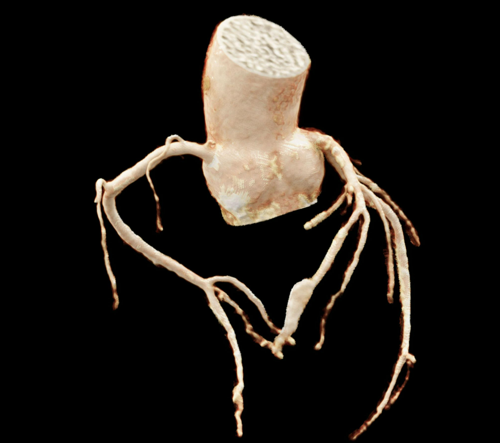
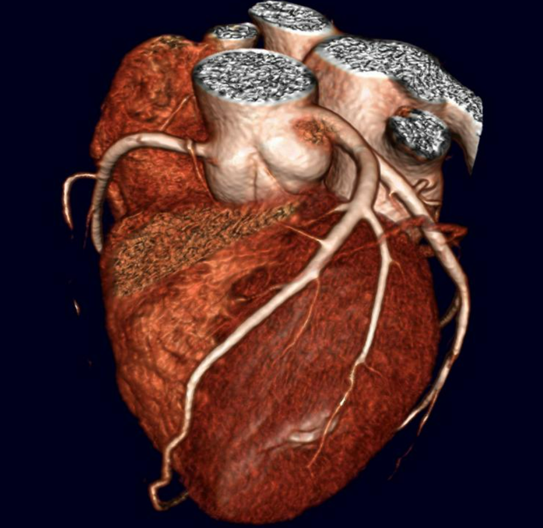
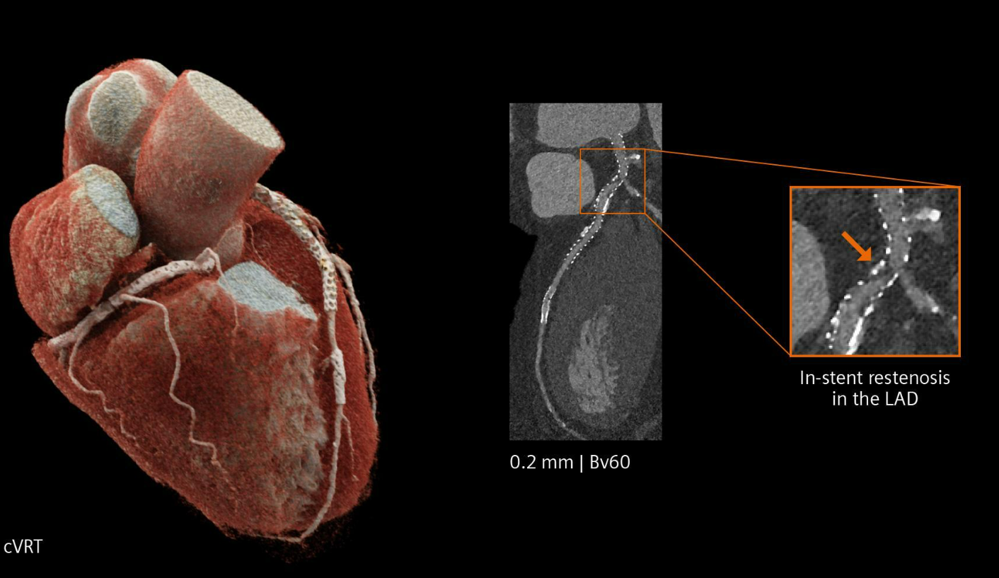
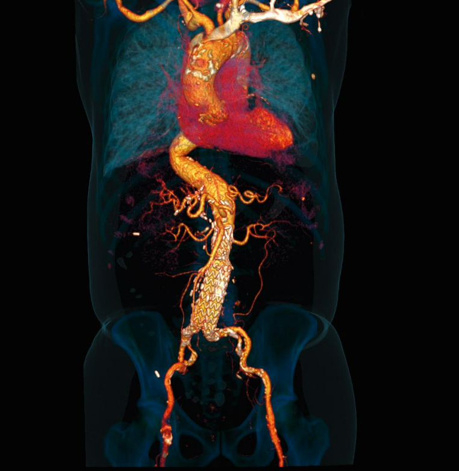
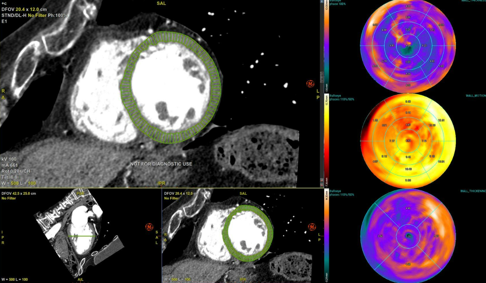
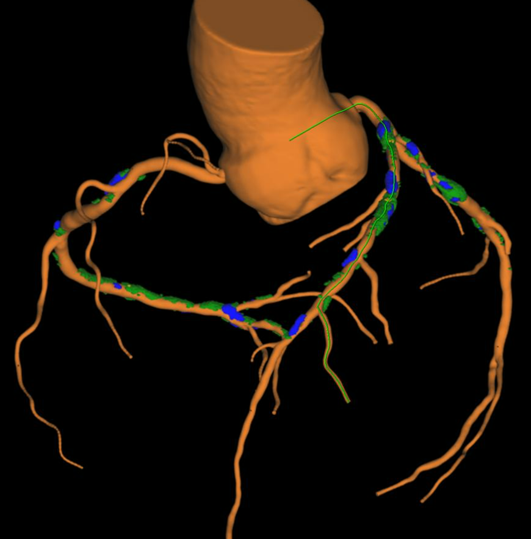

Coronary Plaque Analysis
Assessment of coronary artery stenosis, plaque burden, plaque composition, calcified and non-calcified plaque, and imaging features associated with cardiovascular risk.
Cardiovascular CT core laboratory analysis combines standardized imaging measurements, detailed anatomical assessment, and research-oriented evaluation. At CIARC Lebanon, our focus is on the application of quantitative imaging methods to support cardiovascular research and clinically meaningful interpretation.
Assessment of coronary artery stenosis, plaque burden, plaque composition, calcified and non-calcified plaque, and imaging features associated with cardiovascular risk.
Evaluation of pericoronary adipose tissue characteristics and CT-derived imaging markers associated with coronary inflammation.
Longitudinal imaging assessment to examine changes in coronary plaque, cardiovascular structures, and imaging measurements over time.
Quantitative assessment of cardiac chamber anatomy, ventricular function, and CT-based myocardial perfusion imaging.
CT-based anatomical assessment of cardiac valves and surrounding structures, including imaging applications relevant to procedural planning.
Evaluation of image acquisition, reconstruction techniques, image quality, and standardized measurement approaches for cardiovascular imaging studies.



Modern cardiovascular imaging combines advanced scanning technologies, specialized software, and quantitative analysis methods. These technologies support detailed anatomical visualization, imaging research, and the evaluation of cardiovascular disease.
High-resolution CT imaging for the visualization of coronary arteries, cardiac anatomy, and vascular structures.
Advanced CT detector technology offering opportunities for improved spatial resolution, spectral imaging, and detailed cardiovascular assessment.
CT technology designed to support rapid image acquisition and detailed cardiac imaging, including applications involving moving anatomical structures.
Three-dimensional visualization of cardiac structures and coronary arteries to support anatomical interpretation and procedural planning.
Specialized analysis methods for assessing coronary plaque burden, composition, stenosis, and related imaging characteristics.
Software-assisted image segmentation, automated measurements, and quantitative evaluation methods used in cardiovascular imaging.
Advanced post-processing techniques that provide additional information about tissue composition and contrast characteristics.
Imaging-based methods for evaluating cardiac chamber function, myocardial perfusion, and cardiovascular physiology.
Dedicated imaging environments for reviewing CT examinations, performing post-processing, and analyzing cardiovascular data.
Quantitative measurement tools, standardized analysis protocols, and data evaluation methods supporting cardiovascular imaging research.
Planning a cardiovascular imaging study or exploring a research collaboration? Contact CIARC Lebanon to discuss imaging methodologies, quantitative analysis, and potential research opportunities.
Evaluation of suspected or established coronary artery disease, including coronary artery assessment, plaque characterization, stenosis evaluation, and coronary calcium scoring.
CT-based anatomical evaluation and pre-procedural planning for structural heart interventions, including transcatheter aortic valve implantation (TAVI).
Cardiovascular CT assessment of native and prosthetic heart valves, including structural abnormalities, valve dysfunction, and hypoattenuated leaflet thickening (HALT).
CT imaging applications for cardiovascular assessment and follow-up of heart transplant recipients, including coronary artery evaluation when clinically indicated.
Coronary CT angiography-based planning for complex percutaneous coronary interventions, including lesion characterization, calcification assessment, and stent evaluation.
Advanced cardiovascular imaging using photon-counting CT technology, with applications in high-resolution coronary imaging, plaque assessment, and coronary stent visualization.




